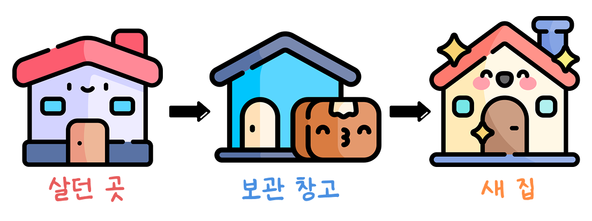
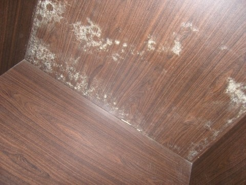
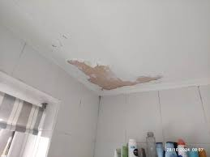
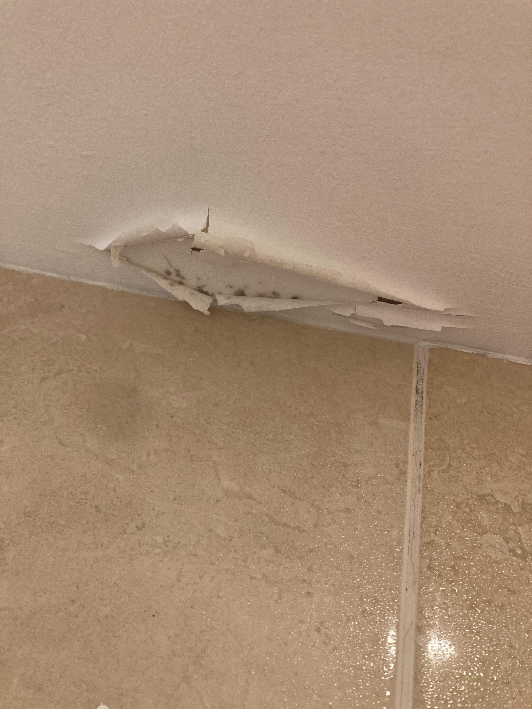

보관이사는 5톤 기준으로 260만 원, 이삿짐 보관 비용은 1일 기준 약 10,000원~ 별도로 발생합니다. 이사 나가는 날과 새집에 들어가는 날이 다르거나 인테리어 등으로 입주가 지연될 경우, 이삿짐을 보관하기 때문에 포장 이사보다 2배 비쌉니다.
1. 이삿짐의 양(무게)
2. 작업 인원수
3. 가전, 가구 분해 설치 등 특수 작업비용
4. 운반 방식
5. 날짜, 이동거리
6. 이삿짐 보관일, 보관 장소
일반 이사와 달리 보관이사는 짐을 보관해두기에, 보관일에 따라 비용이 책정됩니다.
| 구분 | 공공창고 또는 비닐하우스 | 컨테이너 보관 | 전용 보관 창고 |
|---|---|---|---|
| 장소 | |||
| 이삿짐 보관 비용 (1일, 1톤 기준) |
무료 ~ 4,000원 | 4,000 ~ 8,000원 | 5,000 ~ 10,000원 |
| 장점 | 저렴한 비용 | 온도, 습도 영향 적음 | 온도 습도 조절 가능, 가전제품 전기 연결 가능 |
| 단점 | 통풍 X, 온도 습도에 취약함 | 통풍 X | 가능 업체 수가 적음 |
| 추천 | 6개월 미만의 단기 보관 온도, 습도 영향 없는 물건 보관 |
단기 보관이사 | 장기 보관, 고가 물품 보관 |
업체마다 차이가 있을 수 있습니다.
집에서 나가는 날과 새집으로 들어가는 날이 다르거나, 인테리어 등으로 입주가 지연될 경우 사용하는 이사 방법으로 짐을 일정 기간 동안 보관하기에, 2번의 운반 과정과 이삿짐 보관 비용이 발생하여 포장이사 대비 약 2배 비쌉니다.

보관이사 비용 = 일반 포장 이사 비용 x 1.5 + 이삿짐 보관 비용(5T 기준 1일 10,000원~)
(업체마다 차이가 있을 수 있습니다.)
| 구분 | 포장이사 | 보관이사 |
|---|---|---|
| 이삿짐 포장 | O | O |
| 이삿짐 운반 | O | O |
| 이삿짐 정리 | O | O |
| 박스, 바구니 대여 | O | O |
| 짐 보관 | X | O |
| 2차 운반 | X | O |
| 2차 정리 | X | O |
| 특징 | 포장, 정리 모두 업체에서 진행 | 일정 기간동안 이삿짐 보관 가능 |
| 평균 가격대 (5톤 기준, 사다리차 별도) |
평균 130만 원 | 평균 260만 원 (이삿짐 보관 비용 별도) |
이삿짐을 장기간 보관하면 습기나 온도로 인해 곰팡이나 오염, 고장, 분실의 위험이 있습니다. 이런 위험을 방지하기 위한 보관이사할 때 포장 및 꿀팁 전부 알려드릴게요.
세탁기, 건조기처럼 습기가 남기 쉬운 가전제품은 장기간 보관 시 곰팡이, 냄새가 날 수 있기에 포장하기 최소 3일 전 사용을 멈추고 세척 및 건조 작업이 필요합니다.
곰팡이가 잘 쓰는 옷, 이불, 목재가구 등 포장 시 습기 제거제, 방향제 등을 미리 구비해야 합니다. 보관이사 업체에 같이 포장 요청하면 곰팡이와 냄새 걱정을 덜 수 있습니다.
곰팡이로 때 타기 쉬운 매트리스는 포장 시 비닐 커버로 1차 포장한 뒤, 방수 커버를 한 번 더 씌워 포장에 신경을 써야 합니다.
선을 다 빼고 포장하면 나중에 섞여 설치 시 불편하기에 가전제품을 보관할 때 연결된 전선은 분리하지 말고 함께 포장해 달라고 요청하세요.
이삿짐에 어느 방의 물품인지 자세히 표시하세요. 보관이사 업체에서 표기하지만 세세하게 작성해 두면 정리 시 도움이 됩니다.
일부 보관이사 업체는 여러 고객의 짐을 함께 보관하여 분실 및 파손의 위험이 있기에 짐을 나르기 전, 사진이나 동영상을 남겨두시는 것이 좋습니다.
동일한 인원이 작업하는지 확인하세요. 같은 전문가라도, 경험한 분이 이삿짐을 더 꼼꼼히 챙겨주십니다.



| 짐의 양, 부피 기준 | 작업 인원 구성 |
|---|---|
| 1톤 | 남자 2명 |
| 2.5톤 | 남자 2명 + 여자 1명 |
| 5톤 | 남자 3명 + 여자 1명 |
| 6톤 | 남자 3명 + 여자 1명 |
| 7.5톤 | 남자 4명 + 여자 1명 |
| 10톤 이상 | 남자 5명 + 여자 1명 |
| 이삿짐 량 | 사용 컨테이너 | 이삿짐 보관 비용 |
|---|---|---|
| 5T | 1개 | 10만 원 |
| 6T | 2개 | 20만 원 |
| 10T | 2개 | 20만 원 |
컨테이너 용량에 맞춰 짐을 보관하세요. 컨테이너 1개 당 약 5톤 정도 수용 가능합니다.
이삿짐이 6톤일 경우, 5톤에 맞춰 짐을 줄이면 이삿짐
보관비용을 절반으로 줄일 수 있습니다.